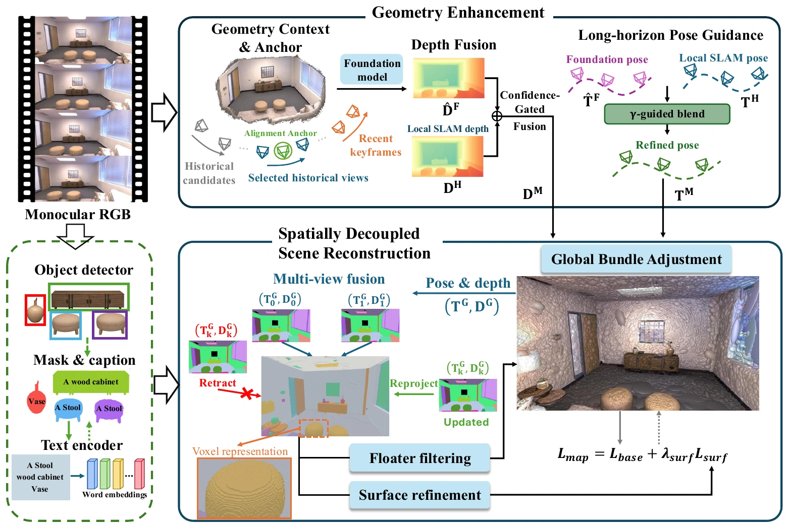
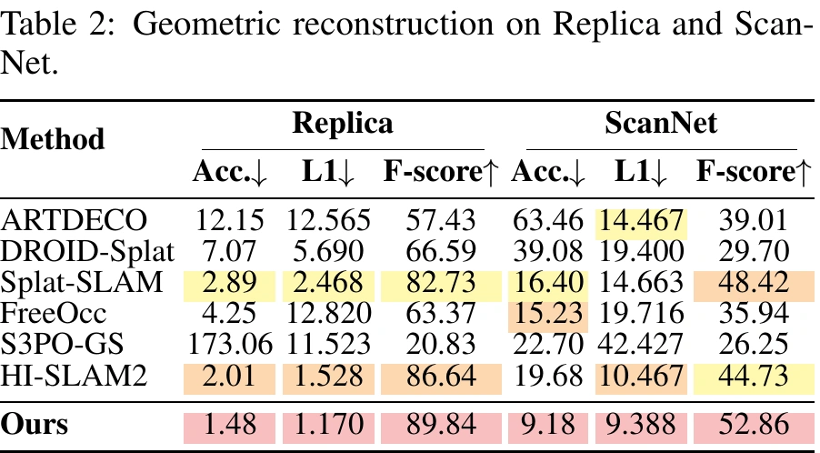
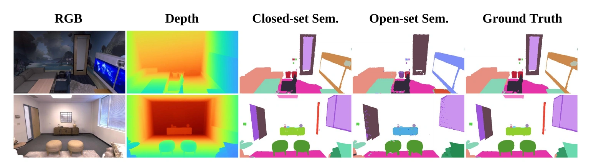
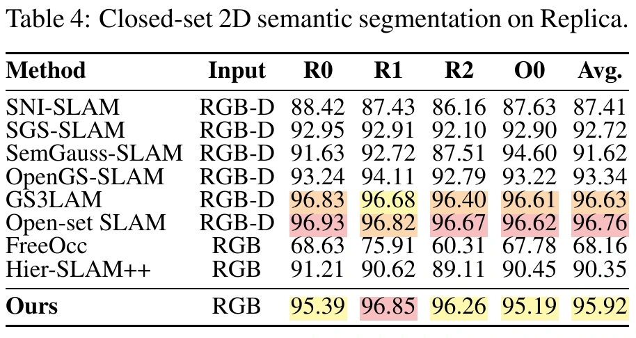
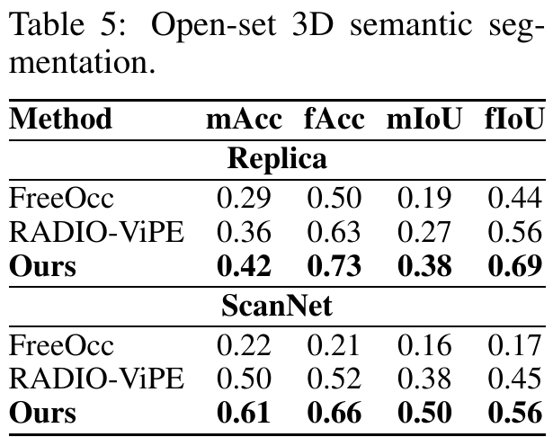
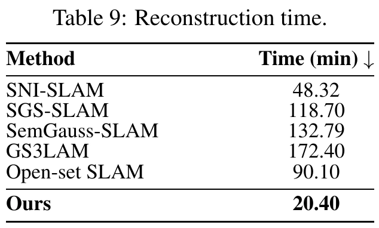

Abstract
Monocular semantic SLAM aims to reconstruct scene geometry and build semantic maps from RGB observations. Existing Gaussian-based methods often attach semantic labels or features to evolving Gaussian primitives, making semantic fusion difficult to maintain and increasing reconstruction overhead. Hybrid Gaussian–voxel representations provide more stable semantic support, but often rely on RGB-D input or known poses and do not revise historical semantic evidence after geometry updates.
We present UniGS-SLAM, an RGB-only framework that decouples open-vocabulary semantics from Gaussian reconstruction while preserving bidirectional interaction. Foundation priors enhance monocular depth and pose estimation, while semantic observations are fused into an independent sparse voxel map with observation provenance, enabling historical contributions to be revised as reconstruction evolves. The fused semantics further guide Gaussian filtering and local surface refinement.
Experiments on Replica, ScanNet, and KITTI-360 show leading tracking, rendering, and geometric reconstruction performance among representative RGB-only methods, together with strong open-set semantic mapping on Replica and ScanNet. We also achieve a 2.37× reconstruction speedup over the fastest compared semantic SLAM baseline.
Framework

Rendering Results
Input RGB (left) and reconstructed RGB (right), rendered from the final Gaussian map at the corresponding estimated camera poses.
Geometric Reconstruction
Progressive visibility replay of the final Gaussian maps with estimated camera trajectories, followed by a short orbit of each scene.

Semantic Mapping



Efficiency
UniGS-SLAM reconstructs Replica scenes in 20.40 minutes, achieving a 2.37× speedup over the fastest compared semantic SLAM baseline.

Citation
Citation information will be added when a public manuscript identifier is available.